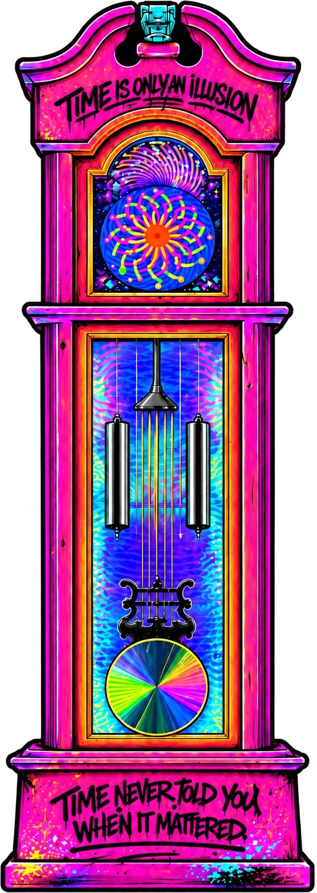

TIME IS
AN ILLUSION
WE LEARNED HOW TO READ TIME.
NOBODY TAUGHT US WHAT TO DO WITH IT.

TIME BECAME
A RULER.
Time is one of the most important things in life, and somehow we're never really taught how to use it.
We learn to read clocks. Count days, weeks, months and years. We organize our lives into calendars and schedules. We remember events by asking how long ago they happened, and plan our futures by asking how much longer until something arrives.
Understanding that sequence matters. It gives us perspective. It helps us learn from the past and prepare for the future.
WE MISTOOK MEASURING TIME
FOR MASTERING IT.
We wait to start the project. Change the habit. Pursue the dream. Have the difficult conversation. Make the thing.
WE GIVE THE CLOCK
AUTHORITY OVER DECISIONS
THAT ULTIMATELY BELONG TO US.
THE ONLY MOMENT
YOU CAN TOUCH
IS THIS ONE.
Every meaningful decision, every accomplishment, every change we will ever make begins in the present moment.
If there is someone you aspire to become, that person isn't created by waiting for the right time. They're created by acting while the time is now.
RARELY ANNOUNCES ITSELF.
More often, it is made by the decision to begin.
Maybe we should spend less time asking what time it is and more time asking what we're doing with the time we have.
TIME ISN'T JUST
SOMETHING TO COUNT.
TO SPEND.
Its value isn't determined by how much of it we possess, but by what we choose to do with the moment in front of us.
NOW FUCK
WITH THE CLOCK.
There are no instructions. No correct combination. No right way to experience it.
the buttons.CHANGE
the light.MAKE
it weird.
Every person who interacts with it changes the piece, even if only for a moment. What you see doesn't have to be what the next person sees.
LET YOUR IMAGINATION TAKE OVER.
A CLOCK THAT
DOESN'T REALLY GIVE A SHIT
WHAT TIME IT IS.
I came across a transformed grandfather clock online years ago that stuck with me. The artwork was bold, unique and beautifully executed, but I couldn't stop thinking about what light could become if it wasn't an accessory—if it became part of the artwork itself.
Eventually I found an estate-sale grandfather clock and started chasing that question.
Thousands of LEDs, holographic reflection, mind-bending foils, movement, custom controls, electronics, code and an unreasonable amount of tinkering later, it became something much bigger than a clock.
That's usually how this shit starts.
SOMEONE MIGHT FIND IT
AND I MAY NEVER KNOW.
They might experience something I poured an absolutely ridiculous amount of myself into without knowing anything about the person behind it.
AND I MIGHT NEVER EVEN KNOW IT HAPPENED.
THAT'S FUCKING BEAUTIFUL TO ME.
FROM THE GARAGE
TO SOMEWHERE IT BELONGS.
For years I'd go to CONNECT with my family, admire the work around us, and say, “Next year, I'm going to build something for CONNECT.” Then life got busy and I'd convince myself I wasn't really an artist.
Eventually I decided another year wasn't going to pass without at least asking.
I'm grateful every time this thing gets a place in the world—even when some part of me still isn't convinced I've earned that place.
YOU DON'T HAVE
TO FEEL READY.
If there's some ridiculous idea living in your head, you don't need a date on the calendar to give you permission.
You don't even have to believe in yourself yet.
FUCKING THING.
Maybe the belief catches up later.
MEET THE HUMAN BEHIND IT →